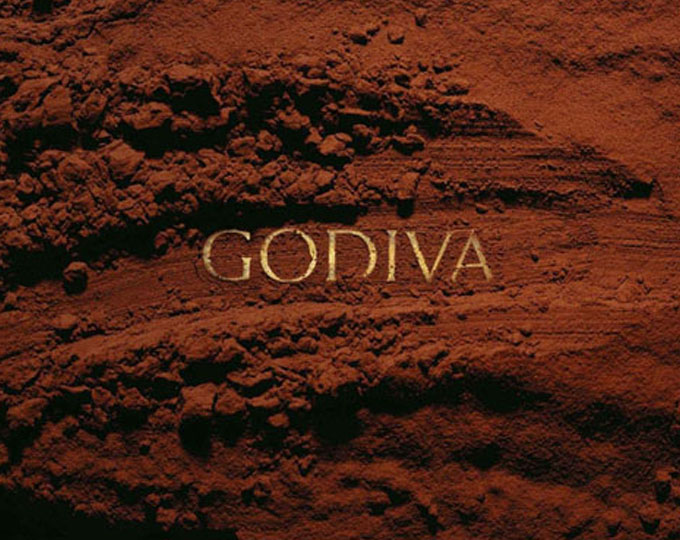
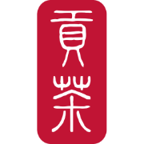

홈 > 브랜드 매거진 > Venchi
Venchi
벤키(Venchi)는 1878년 설립된 이탈리아의 프리미엄 초콜릿·젤라토 제조 기업이다.
산업 분야 식음료 · 공개 등급 자료 기반 · 브랜드 평가 4.1 ★
한눈에 보는 브랜드
벤키(Venchi)는 1878년 토리노에서 시작된 이탈리아 프리미엄 초콜릿·젤라토 브랜드다. 20세 청년 실비아노 벤키가 두 개의 청동 가마솥으로 반키글리아 지구 작은 공방에서 실험을 시작한 것이 출발점이다.
첫 전환점은 1905년 누가틴(Nougatine) 레시피 완성과 피에몬테 왕실 납품 지정으로, 장인 초콜릿 명가의 지위를 굳혔다. 두 번째 전환점은 2000년대 이후 초코젤라테리아 부티크 모델로의 전환으로, 판매에서 체험형 매장 사업으로 무게중심을 옮겼다.
현재 본사는 피에몬테 쿠네오주 카스텔레토 스투라에 있으며, 70개국 이상에서 180개가 넘는 매장을 운영한다.
브랜드 관점
벤키의 핵심 경쟁력은 약 145년 헤리티지와 장인 제법을 부티크 체험으로 전환한 사업 구조에 있다. 린트가 대중형 프리미엄, 고디바가 글로벌 인지도로 경쟁한다면, 벤키는 피에몬테 헤이즐넛(PGI)과 250종 초콜릿 레시피, 90종 젤라토를 한 매장에서 결합하는 방식으로 차별화한다.
즉 초콜릿 소매를 넘어 젤라토·카페·선물을 묶은 복합 부티크가 매출 성장 엔진이다. 뉴욕 플래그십의 초콜릿 폭포 같은 연출형 매장과 공항 면세 채널 확대는 럭셔리 식품을 관광·여행 소비와 연결하는 전략이다.
매출 목표를 3억 유로(약 4천억원대) 규모로 설정하며 직영 매장망을 공격적으로 늘리는 점도 주목된다. 한국 독자에게 벤키는 백화점 식품관에 들어온 이탈리아 장인 디저트의 대표 사례로, 선물·미식 수요가 겹치는 시장에서 어떻게 헤리티지를 프리미엄 가격으로 환산하는지 보여준다.
시작과 성장
벤키가 태어난 19세기 말 토리노는 사보이아 왕가의 수도이자 이탈리아 초콜릿 산업의 중심지였다. 잔두야로 대표되는 피에몬테 헤이즐넛 가공 전통이 깊게 자리했고, 이 토양 위에서 1878년 실비아노 벤키가 전 재산으로 산 청동 가마솥 두 개와 함께 반키글리아의 작은 가게에서 사업을 시작했다.
첫 도약은 1905년 누가틴의 탄생으로, 카라멜라이즈한 설탕에 잘게 부순 헤이즐넛 심을 60% 다크 초콜릿으로 감싼 이 제법은 지금까지 거의 그대로 이어진다. 두 번째 도약은 왕실 납품처 지정으로, '피에몬테에서 가장 우아한 초콜릿 가게'라는 평판을 얻으며 고급 브랜드 정체성을 확립했다.
이후 회사는 크레미노, 초코비아 같은 시그니처 라인을 확장하고, 본사를 쿠네오주 카스텔레토 스투라로 옮겨 생산 기반을 키웠다. 2000년대 들어 단순 제조·판매에서 글로벌 직영 부티크 네트워크로 전환했고, 2024년 데아고스티니 등 기관 투자를 받아들이며 국제 확장에 가속을 붙였다.
브랜드 아이덴티티
벤키의 브랜드 가치는 이탈리아 장인정신, 천연 원료, 그리고 즐거운 실험정신의 결합이다. 왕실 문장은 더 이상 포장에 쓰이지 않지만, 디테일에 대한 집착과 실험적 태도라는 창업 정신은 그대로 유지된다.
비주얼 아이덴티티는 'Venchi 1878'이라는 연도 병기로 헤리티지를 전면화하고, 상징색과 풍부한 질감의 포장으로 럭셔리 미식의 감각을 전한다. 타깃은 일상적 단맛보다 선물·자기보상·미식 경험을 찾는 도시 중상위 소비자이며, 여행 리테일과 도심 플래그십을 통해 글로벌 미식가에게 다가간다.
브랜드 보이스는 과시적 사치보다 '오래된 장인의 자부심'을 차분하게 전하는 톤으로, 전통과 혁신을 동시에 강조한다.
제품과 서비스
벤키는 초콜릿과 젤라토를 두 축으로 한다. 대표 제품은 1905년 제법의 누가틴, 잔두야와 헤이즐넛을 쌓은 3층 크레미노, 시그니처 초코비아이며 잔두이오토, 바·미니바, 스프레드, 고급 부활절 에그도 갖춘다.
포맷은 낱개·선물 박스부터 매장 디핑까지 다양하고, 무설탕·비건 옵션도 운영한다. 채널은 직영 초코젤라테리아 부티크와 카페, 백화점 식품관, 공항 면세, 온라인몰로 구성된다.
현재 상태
본사는 이탈리아 피에몬테 쿠네오주 카스텔레토 스투라에 있다. 지배구조는 다니엘레 페레로가 1998년부터 회장 겸 CEO로 경영을 이끌며, 2024년 데아고스티니가 첫 기관 파트너로 참여해 지분 구조에 변화가 생겼다.
회사는 70개국 이상에서 180개가 넘는 직영·복합 매장을 운영하는 비상장 기업으로 글로벌 확장 국면에 있다. 한국에서는 백화점 식품관 중심으로 젤라토·초콜릿이 유통되고 있다.
정확한 지분율과 최신 매출 확정치는 미공개.
타임라인
정리된 연도형 이벤트가 없습니다.
BI/CI 변천사
함께 읽을 브랜드

식음료 · 자료 기반고디바고디바(Godiva)는 1926년 벨기에 브뤼셀에서 창립된 프리미엄 초콜릿 브랜드이다.
Be
Bezi
식음료 · 편집 검수BeziBezi는 2024년에 기록된 Food Brands 계열의 브랜드 아이덴티티 사례입니다. Red Antler가 아이덴티티 작업의 디자이너로 기록되어 있습니다. 공개...

식음료 · 자료 기반공차공차(Gong Cha)는 대만에서 시작된 버블티 브랜드의 한국 사업을 운영하는 공차코리아의 브랜드다.
식음료 · 자료 기반Grom그롬(Grom)은 천연 재료를 강조한 이탈리아 프리미엄 젤라토 브랜드이다.
 식음료 · 매거진 완성스타벅스
식음료 · 매거진 완성스타벅스스타벅스는 커피를 팔면서 동시에 사람들이 머무는 시간과 공간의 감각을 설계한다. 음료는 핵심 상품이지만, 브랜드의 차별성은 매장 안에서 보내는 시간, 주문 언어, 조...
 식음료 · 매거진 완성코카-콜라
식음료 · 매거진 완성코카-콜라코카-콜라는 음료의 맛보다 함께 마시는 순간의 감정을 브랜드 자산으로 축적해 왔다. 병의 형태, 색, 광고 언어, 공유의 장면이 반복되면서 제품은 탄산음료를 넘어 친...
네슬레(Nestlé)는 스위스 브베에 본사를 둔 세계 최대 규모의 식음료 다국적 기업이다.
Di
Diana's Seafood
식음료 · 편집 검수Diana's SeafoodDiana's Seafood는 2025년에 기록된 Food Brands 계열의 브랜드 아이덴티티 사례입니다. Wedge가 아이덴티티 작업의 디자이너로 기록되어 있습니...